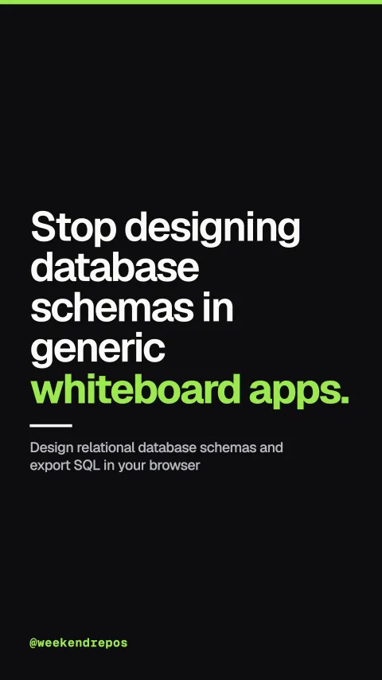

drawdb-io/drawdb
Design relational database schemas and export SQL in your browser

Stop designing database schemas in generic whiteboard apps.
Generic whiteboard tools don't understand foreign keys or SQL types.
First, sketching tables on an ordinary canvas breaks down because generic tools cannot validate data types, foreign keys, or relational constraints.
Generic tools · No type enforcement or SQL export
DrawDB gives you an intuitive schema canvas right in your browser.
Second, DrawDB is a completely free, open-source diagram editor that lets you build entity relationship models with drag-and-drop ease.
Schema canvas · Drag-and-drop tables, keys, and indexes
Choose from pre-built relational templates and customize schema layouts in seconds.
Third, you can load production templates for e-commerce, authentication, or social feeds and customize them instantly.
Template library · Pre-built schemas ready to use
Export DDL migration scripts for PostgreSQL, MySQL, SQLite, and MariaDB.
Fourth, export production-ready SQL scripts or import existing database schemas with a single click.
Multi-dialect · Postgres, MySQL, SQLite, MariaDB
Open source on GitHub with nearly forty thousand stars.
DrawDB is open source under the AGPL license with nearly forty thousand stars on GitHub.
drawdb-io/drawdb · AGPL-3.0 · 39.8k stars · JavaScript